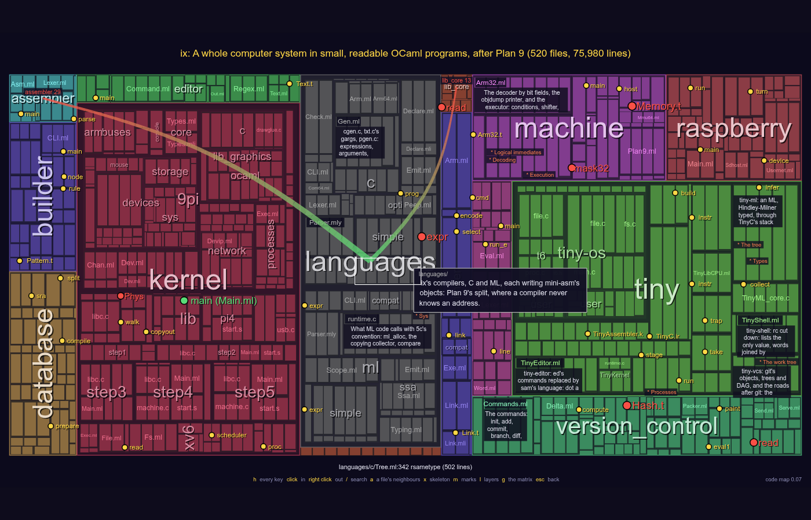
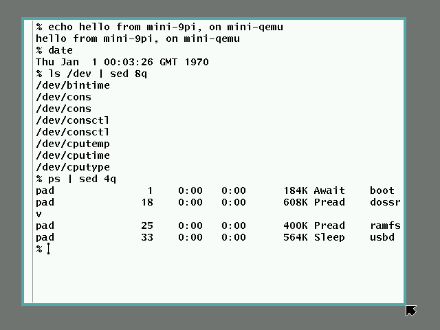

A whole computer system in small, readable OCaml programs
What's New · The Goal · Source Code · m-IX and t-IX in your browser · AI disclaimer
mtIX is a kernel, a shell, C and ML compilers, an assembler and a linker, an editor, a windowing system, a web browser, a build system, a database, version control, and more, each a separate program written in OCaml, small enough to read in a few sittings, following Plan 9. It boots on real hardware: the Raspberry Pi, a computer anyone can afford, and on its own emulator. Each program comes in two sizes: mini, the Plan 9 original reimplemented faithfully, and tiny, a free variant in one file. All the minis together are about 129,000 lines (OCaml mostly, with their libraries and the C under them), all the tinies about 19,000: two whole systems, each small enough to read. Their budgets are 125,000 and 20,000 lines, for all that is still to come.
The main goal of IX is to teach people: a whole system that one person can understand (the goal).

rio under mini-qemu, mtIX's Raspberry Pi emulator.
mini-mk rebuilds it with its own tools only, mini-ml, mini-cc, mini-asm and mini-ld, and that build, building itself again, gives the same files byte for byte (see the changes).Most software cannot be understood by one person. A kernel, a compiler or a browser of today is millions of lines and grows every year, until no single person understands it, its own authors included. The exceptions are few. Plan 9 is the one mtIX follows: a complete system in which every program can still be read by one person, which is what the Principia Softwarica books do.
Most of mtIX's code is written by an AI, but it does not start from nothing. It starts from designs made by people (named below), and it is directed to write the smallest and most readable code that does the job. That code is then meant to become literate programs, as in Principia Softwarica: books of a reasonable size that explain all of the code to a human reader.
The trend these days is to use AI to write more and more code, faster than anyone can read it, until only the AI can add a feature to the program. This was already partly true before AI: many programs had grown so big that they were very hard to change. mtIX uses AI the other way. Here it rewrites giant programs in far less code, until a whole system is small enough for a person to understand again, and to extend: by hand, or by asking the AI, but in a way that person can still follow. AI can help people take back control of the programs they use.
AI makes the programs smaller. Humans understand more.
The source code is on GitHub, and its README tells everything about mtIX: the programs, how to build and run them, the design, who wrote it.
The code can also be explored in the browser:
mtIX's code map shows the whole repository as
a map: each folder a region, each file a block the size of its code,
each block the code itself once you zoom in. Every folder and file
carries a one-line summary, and the X-ray (x) shows each
part's skeleton, the few definitions the rest hangs on and how they
connect. / searches, a click on a name shows its
definition, g shows the dependencies between the parts as
a matrix, and h lists every key.
A link can open it on any part of the code (the README's tables link each program so):
codemap.html?focus=version_control — a folder;codemap.html?focus=tiny/TinyShell.ml — a file;codemap.html?focus=version_control&def=diff — a definition, by name (or &line=n in a file).
It is tinybox's code map, from
ocaml-elm-playground,
after the author's codemap.
What it says of each part comes from the .codemapconfig
files in each directory of mtIX.
Unlike xix and
Principia Softwarica,
mtIX is mostly written by AI: by Claude, Anthropic's model, in Claude
Code. Every line of its code was added in a commit co-authored by
Claude (697 of its 739 commits, for the 182,000 lines of OCaml, C and
assembly it has today, tests included; the other commits are my own edits to the
README and the notes). The same goes for this website and the code
map's .codemapconfig files.
What I (Yoann Padioleau) do is direct the work: I choose what mtIX is, its design, which programs to write and at what size, and I review the code. The designs themselves come from humans: Plan 9's programs (Ken Thompson, Rob Pike and the other Plan 9 authors), xv6 (Russ Cox, Frans Kaashoek, Robert Morris) and my own xix ports.
docs/yoann_notes/prompt-history.md keeps every prompt I wrote to Claude to build mtIX, verbatim, each with a summary of the answer, and the README's Who wrote it says more.
mtIX is by Yoann Padioleau, mostly written by Claude (AI disclaimer), and a companion to xix and Principia Softwarica.